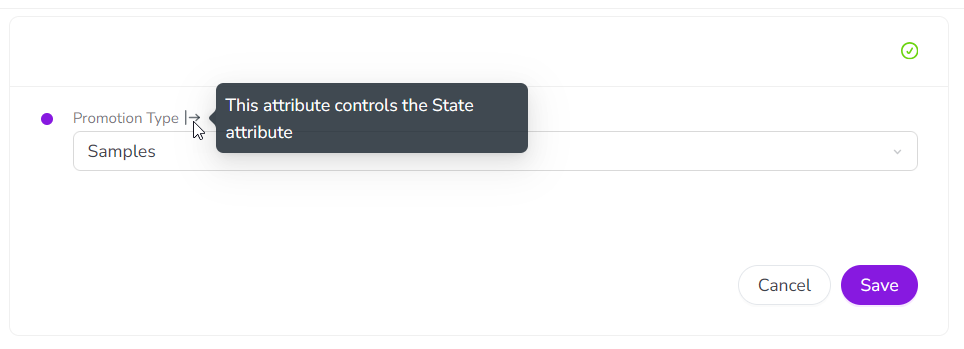
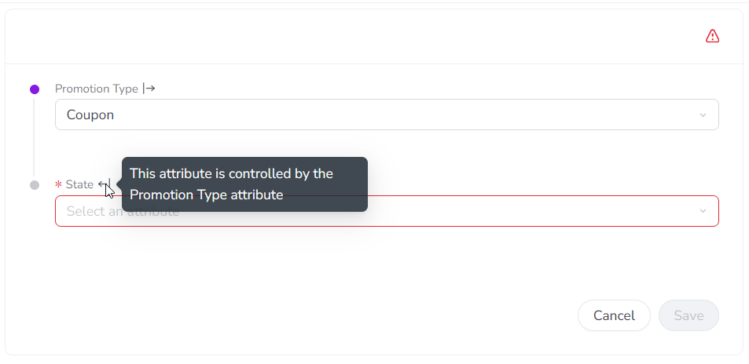
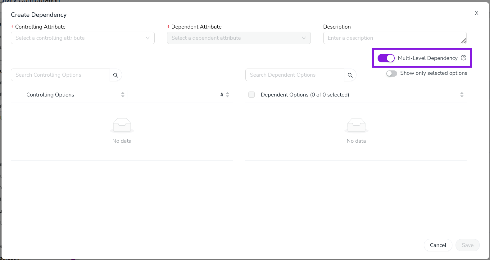
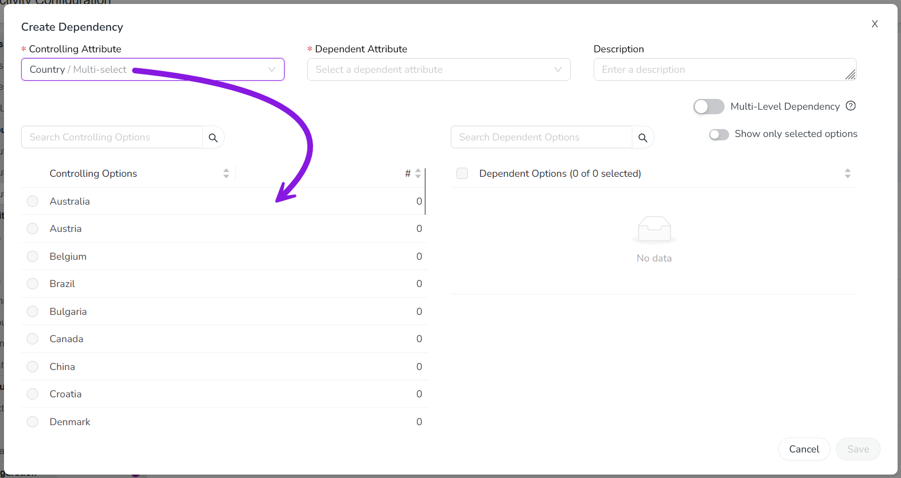
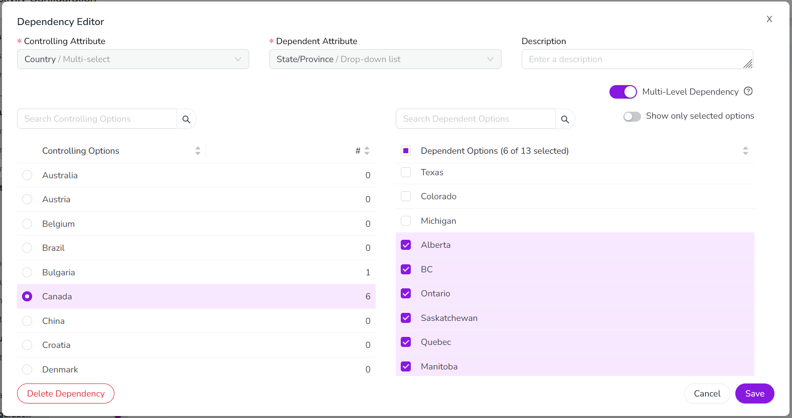
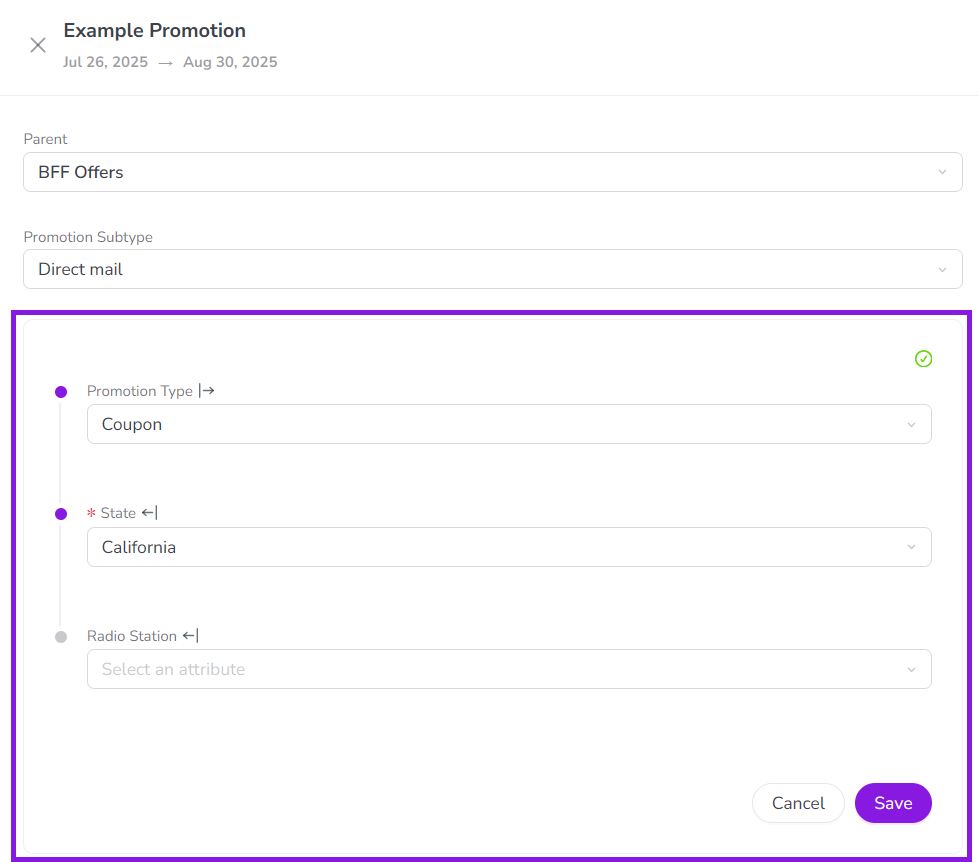
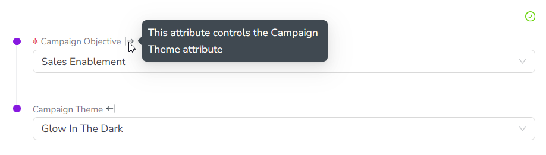
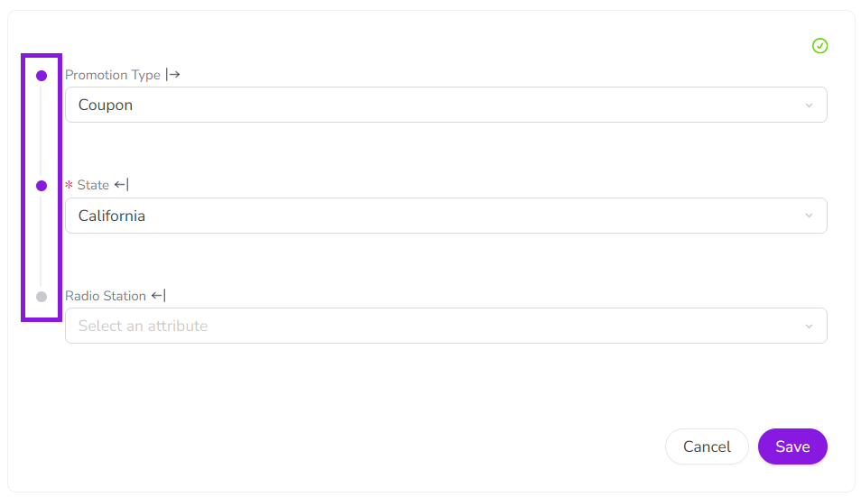
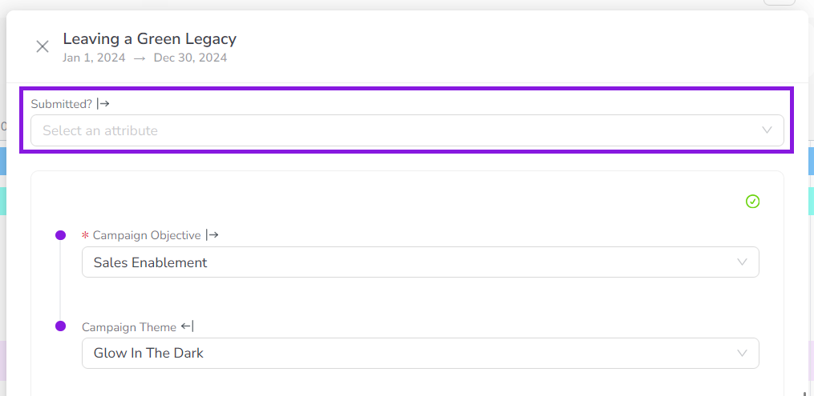
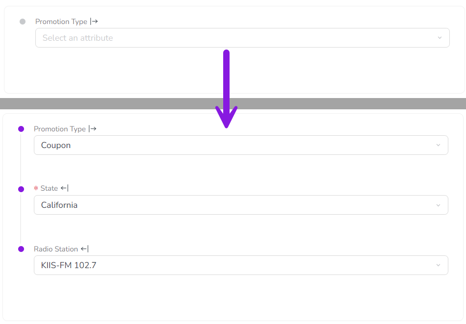

Set up attribute dependencies (Preview)
If two Drop-Down List or Multi-Select List attributes are logically related, you can create an attribute dependency to make the selected option in one attribute control the available options for the other attribute.
How attribute dependencies work
In an attribute dependency, the value selected for the first attribute (the controlling attribute) determines which values can be selected in the second attribute (the dependent attribute). The controlling attribute's value acts as a filter for the dependent attribute: after you select a value for the controlling attribute, the dependent attribute only displays list options that are valid for the controlling attribute's value, and hides options that are not valid.
Attribute dependencies help to protect the integrity of your data by ensuring that users select valid value combinations. They are also useful for attributes that have a very large number of values: dependencies make it much easier for users to select a value, because they limit the number of options that are displayed.
- Example
A common use case for attribute dependencies is for attributes that have hierarchical relationships: for example, geographic categories like State and City. Since City is a subcategory of State, only certain options for City are valid based on the option set for State: if State is set to California, setting City to Miami would not be valid.
If you set up an attribute dependency in which State is the controlling attribute and City is the dependent attribute, users would not be able to select Miami when the State attribute is already set to California. Instead, the City attribute would only display options for cities that are actually located in the selected state (such as Los Angeles, San Francisco, etc.).
Local vs. multi-level dependencies
You can choose to configure any attribute dependency as local or multi-level:
- Local dependency
Both the controlling and the dependent attribute are attached to the same activity type. Users select values for both attributes on the same activity.
- Multi-level dependency
The controlling and dependent attributes are attached to different activity types, which are at different levels of the activity hierarchy. Users select the controlling attribute value on one activity, and the dependent attribute value on a separate activity that is a descendant of the first activity.
Because local dependencies are displayed together on the same activity, they're simple for users to understand and work with. Local dependencies work well for most attributes that are logically related, in particular when the related attributes are all specific to the activity where they are shown.
Multi-level dependencies are useful when a controlling attribute's value can be applied to multiple separate activities. By leveraging the fact that descendant activities inherit the attribute values of their ancestor activities, multi-level dependencies can reduce the amount of data entry on any given activity. This is because users only need to select the controlling attribute's value once on the higher-level activity, instead of individually on every lower-level activity.
Multi-level dependencies also allow you to distribute attributes more evenly across the activity hierarchy, while still maintaining all the benefits of a dependency. For example, you can use multi-level dependencies to reduce the number of attributes attached to the activity types at lowest level of your activity hierarchy, which creates a better experience for users when configuring this type of activity.
- Example
Say your Program activities are region-specific. For example, the Country attribute on all Tactic activities within a particular Program is set to United States.
If you attach the Country attribute to the Program activity type, and the State attribute to the Tactic activity type, you can then set up a multi-level dependency between these two attributes.
This means that when a user sets the Country attribute to United States on a Program, this value is automatically applied to all Tactics under that Program. The dependency then ensures that when a user selects a value for State on any of those Tactics, the list of states they can choose between is automatically filtered to only display US states (and not Canadian provinces, for instance).
Chained dependencies
Each attribute dependency consists of two linked attributes. By setting the dependent attribute in one dependency as the controlling attribute in another dependency, you can "chain" dependencies to create a multi-attribute sequence of dependencies. For example, you can chain a Country-State dependency with a State-City dependency to create a three-attribute Country-State-City dependency.
In chained dependencies, each attribute in the chain controls the available options for all of the attributes that follow it. For example, the selected Country determines the options available for State, and the selected State in turn determines the options available for City. As a result, Country indirectly controls City.
You can chain both local and multi-level dependencies. Multi-level dependency chains can span multiple levels of the activity hierarchy, for example:
- Example 1: Multi-level dependency chain
This example shows a chain of two multi-level dependencies that spans three levels of the activity hierarchy:
First dependency: The Country attribute on the top-level activity type Campaign (level 1) controls the State attribute on the mid-level activity type Program (level 2).
Second dependency: The State attribute on the mid-level activity type Program (level 2) controls the City attribute on the bottom-level activity type Tactic (level 3).
You can also construct chains that contain both types of dependency. For example:
- Example 2: Mixed dependency chain
This example shows a mixed chain of two dependencies, one multi-level and one local:
First dependency (multi-level): The Country attribute on the parent activity type Program controls the State attribute on the child activity type Tactic.
Second dependency (local): The State attribute on the activity type Tactic controls the City attribute on the same activity type.
Required dependent attributes
Local dependencies are active on any activity type where both the controlling attribute and the dependent attribute are attached. If the dependent attribute is set as required for that activity type, then it is also required within the attribute dependency on that activity type, so users must select a value for it.
When a dependent attribute is set as required, it is only conditionally required. This means that it is only required when its controlling attribute is set to an option that makes it relevant.
If the controlling attribute is set to an option that does not have valid options in the dependent attribute, then the dependent attribute is not required in this situation (and is not displayed, see Auto-hide attribute values). This ensures that you don't have to select a value for an attribute when it isn't relevant, but don't miss an attribute when it is needed.
- Example
In this example, the State attribute is a dependent of the Promotion Type attribute:
If the Promotion Type is set to Samples, the State attribute is not relevant, so it's not required in this case (and not displayed):

If the Promotion Type is set to Coupon, the State attribute becomes relevant, so it is now conditionally required (and marked as required accordingly):

{kind=link}
{kind=link}
Create attribute dependencies
You can create an attribute dependency between two attributes that meet the following requirements:
Both attributes must have the attribute type Drop-Down List or Multi-Select List.
For a local dependency, both attributes must be attached to the same activity type. The attributes may be set as required or optional.
For a multi-level dependency, the attributes must be attached to at least two different activity types, where:
The controlling attribute is attached to an activity type at a higher level of the hierarchy than the dependent attribute
The dependent attribute is attached to an activity type at a lower level of the hierarchy than the controlling attribute
Neither attribute is set as required on any activity type it is attached to
Neither attribute is part of a dependency chain where any attribute in the chain is set as required
Create a new attribute dependency
In the
 Activities section, click
Activities section, click  Settings.
Settings.On the Activity Configuration page, click Attributes > Attribute Dependencies.
Click
 Create Dependency to open the Create Dependency dialog.
Create Dependency to open the Create Dependency dialog.Optional: If you want to create a dependency where the controlling attribute and dependent attribute are on different levels of the activity hierarchy, turn on the Multi-Level Dependency setting:

Leave this setting turned off to create a local dependency, where both attributes are on the same activity type.
Use the Controlling Attribute menu to select the controlling attribute in the dependency.
This attribute's value controls the available selections in the dependent attribute.
The selected controlling attribute's list options are displayed in the Controlling Options table:

Use the Dependent Attribute list to select the dependent attribute.
This attribute's available values are controlled by the controlling attribute.
The selected attribute's list options are displayed in the Dependent Options table.
In the Controlling Options table, select a list option. The selected controlling list option is highlighted.
In the Dependent Options table, select a list option to set it as valid for the selected controlling list option:

The list options you select under Dependent Options are shown as available options for the dependent attribute when the specified controlling list option is selected. List options that are not selected are hidden.
You can select one, multiple, all, or no dependent list options for any controlling list option.
You don't need to select dependent list options for every controlling list option. If there are no selected dependent list options for a controlling list option, users who choose that controlling list option are not able to set any value for the dependent attribute.
Repeat steps 7 and 8 for each controlling list option for which you want to select dependent list options.
Optional: Enter a brief description of the attribute dependency into the Description field. This description text is shown in the Attribute Dependencies table (Settings > Attributes > Attribute Dependencies).
To finish creating the new attribute dependency, click Save, then click Save Changes.
{kind=link}
{kind=link}
{kind=link}
Your new attribute dependency is displayed in the Attribute Dependencies table, which also shows the scope of the dependency (Local or Multi-Level) under the Scope column.
Edit attribute dependencies
You can edit an existing attribute dependency at any time. You can:
Change which dependent list options are selected for each controlling list option
Change the description text displayed for the dependency
Change the dependency's scope (local or multi-level)
Edit an attribute dependency
In the
Activities section, click Settings.On the Activity Configuration page, click Attributes > Attribute Dependencies.
In the Attribute Dependencies table, find the attribute dependency you want to edit and click
 Edit. The Dependency Editor dialog opens.
Edit. The Dependency Editor dialog opens.Make changes to the dependency as needed:
To change valid dependent list options: In the Controlling Options table, select the controlling attribute option for which you want to edit the valid dependent attribute options. Use the Dependent Options table to make changes to the selected dependent list options.
To change the dependency's description text: Edit the text in the Description field.
To change the dependency's scope: Use the Multi-Level Dependency setting to switch the dependency between local and multi-level.
To finish editing the attribute dependency, click Save, then click Save Changes.
The Dependency Editor dialog closes, and you are returned to the Attribute Dependencies table. Your changes take effect immediately.
Delete attribute dependencies
If an attribute dependency is no longer needed, you can delete it at any time. When you delete an attribute dependency, this does not affect the actual values set in the controlling and dependent attributes on activities, and these values remain unchanged.
Delete an attribute dependency
In the
Activities section, click Settings.On the Activity Configuration page, click Attributes > Attribute Dependencies.
In the Attribute Dependencies table, find the attribute dependency you want to remove and click
 Delete.
Delete.In the confirmation dialog, click Delete to finish deleting the attribute dependency.
The attribute dependency is removed from the Attribute Dependencies table, and a success message is displayed to confirm that the dependency was deleted.
Attribute dependency user experience
Attribute dependencies are useful for complex activity types that have a large number of attributes, but where not all attributes are relevant in every situation. Attribute dependencies are designed with several features to streamline the user experience when working with these types of activities.
Visual appearance of attribute dependencies
When attributes are part of a dependency, they are presented differently within an activity's details panel than attributes that are not part of a dependency.
Local attribute dependencies
On the details panel for an activity that has one or more local attribute dependencies, all the fields for attributes that are part of a local dependency are grouped into their own separate section in the list of attributes:

The attributes are marked with a
 Controlling Attribute or a
Controlling Attribute or a  Dependent Attribute icon to indicate that they are part of a dependency. Placing the pointer on an attribute's icon displays a hint that indicates what the attribute controls or is controlled by:
Dependent Attribute icon to indicate that they are part of a dependency. Placing the pointer on an attribute's icon displays a hint that indicates what the attribute controls or is controlled by: 
The links between attribute dependencies (and chains of dependencies) are visually represented:

When you select a value for any attribute in the local dependencies section, it is not automatically saved. Instead, you must click Save to manually save the selected values. This helps to ensure that any required attributes in the dependency have a value set.
{kind=link}
{kind=link}
{kind=link}
Multi-level attribute dependencies
Attributes that are part of a multi-level dependency are usually not displayed within the local dependencies section. Instead, they look similar to standard non-dependency attributes, but are still marked with the
Controlling Attribute and Dependent Attribute icons: 
Whenever a user changes the value in the controlling attribute of a multi-level dependency, the system displays a confirmation dialog. The dialog warns the user that their change might affect the values of linked attributes on other activities, and is intended to help prevent accidentally changing or removing values on attributes that aren't currently visible to the user.
{kind=link}
Auto-hide attribute values
When a local or multi-level dependent attribute is not (yet) relevant to the activity being created, it is automatically hidden. This minimizes the number of attributes that are initially visible when creating an activity, and reduces distracting visual clutter.
A dependent attribute only becomes visible after you set the controlling attribute to a value for which the dependent attribute has valid options:
If there are no valid options in a dependent attribute, it remains hidden.
For dependency chains (multiple linked dependencies), additional dependent attributes are progressively revealed (as needed) after each controlling attribute selection.
- Example
In this example, only one attribute (Promotion Type) is visible initially. Making a selection for Promotion Type reveals the State attribute, and selecting a state further reveals the Radio Station attribute:

Auto-select attribute value
In some cases, a controlling attribute value has only a one valid option in the dependent attribute. This can happen if an attribute previously had more options that are no longer needed and have been removed, or if you want users to set a value for data consistency.
Whenever you select a value in a local or multi-level controlling attribute that leaves only one possible option in the dependent attribute, the system automatically selects that option in the dependent attribute to save you time and unnecessary clicks.